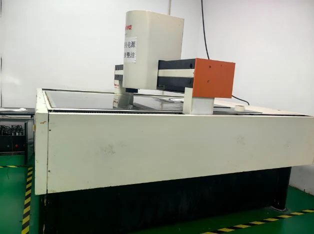
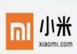
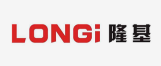
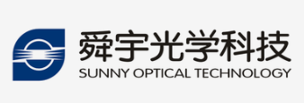
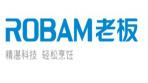
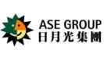
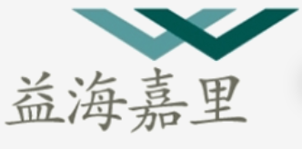

公司成立
开展自动化零部件加工与模切刀模设计制造。
JIANGSU SANFENG HONGYE INDUSTRIAL CO., LTD.
江苏三丰鸿业工业有限公司
自 2006 年起深耕工业制造，以精密刀模与非标自动化两大事业部，服务客户的精密加工与智能生产需求。
COMPANY PROFILE
江苏三丰鸿业工业有限公司成立于 2006 年 2 月，集研发、设计、制造与技术服务于一体。
公司早期以自动化零部件加工、模切刀模设计与生产为主，在精密加工与工程制造经验的基础上持续拓展业务。2015 年成立非标自动化事业部，逐步形成精密刀模与非标自动化两大专业体系。
我们面向 OCA、铜箔、铝箔、胶粘材料、光学膜、3C 电子、汽车零部件、新能源及物流仓储等应用场景，以精度、效率、质量与可靠交付为共同标准。


TEAM & CAPABILITY
覆盖研发设计、制造、调试及售后，以跨专业协同支持项目交付。
专业团队规模
DEVELOPMENT
从零部件加工到精密刀模与自动化系统，技术积累贯穿公司的每一步发展。
开展自动化零部件加工与模切刀模设计制造。
形成高精密圆刀模和平刀模产品体系，服务多种精密模切材料与行业。
进入包装、汽车电子与 3C、视觉检测、智能仓储和物流输送领域。
持续投入新机种研发，推进自动化、数字化与 AI 在制造现场的应用。
TWO BUSINESS DIVISIONS
两大事业部各自深耕专业领域，以精密加工能力与系统工程经验，回应不同生产环节的需求。
MANUFACTURING FOUNDATION
从精密加工、激光与折弯、检测测量，到自动化装配与整线调试，关键环节在公司内部协同完成。



OUR PRINCIPLES
以过程控制和数据验证保障产品一致性。
围绕节拍、工艺和维护性优化交付方案。
将设备防护与现场使用安全纳入设计。
提供咨询、安装调试、培训与定期回访。
从全生命周期出发平衡投入与长期价值。
重视规范制造、现场管理与专业呈现。
SELECTED CUSTOMERS
服务覆盖汽车、3C 电子、新能源、光学、医药及制造业客户。以下为公司最新版资料所列主要客户。






CONTACT US
公司地址：江苏省昆山市玉城中路 368 号